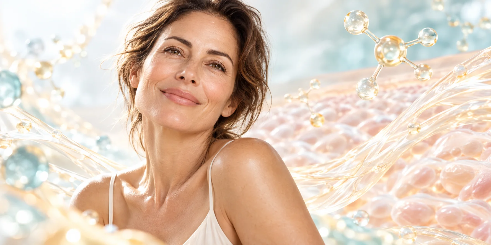

4 aplicacionesUna por semana durante un mes
Tratamiento médico revitalizante · Mujeres y hombres 30+
Vacuna Antiage Cuidarte es quererte.
Un protocolo personalizado para acompañar tu vitalidad, el cuidado antioxidante y el bienestar integral en cada etapa.
Quiero solicitar mi evaluación
Córdoba Capital · Envíos coordinados
Atención exclusivamente particular. La evaluación médica permite definir si el protocolo es adecuado para vos.
30 años o másPara mujeres y hombres
Aplicación profesionalConsultorio, enfermería o farmacia habilitada
Protocolo anualUna vez al año, sujeto a evaluación
Más que “antiage”
Una forma consciente de cuidarte
La Vacuna Antiage es un tratamiento médico inyectable revitalizante que reúne aminoácidos, vitaminas, antioxidantes, oligoelementos y otros componentes seleccionados dentro de una formulación médica.
Aunque se conoce comercialmente como “vacuna”, no es una vacuna de inmunización. Es un protocolo intramuscular que comienza con una evaluación con la Dra. Quesada.
✓ Evaluación personalizada
✓ Consulta presencial o virtual
✓ Atención para mujeres y hombres
Beneficios potenciales
Cuatro formas de acompañar tu bienestar
Una mirada visual y simple sobre los procesos que busca acompañar el protocolo. Cada organismo es diferente y los resultados pueden variar.
Vitalidad
Metabolismo y energía
Vitaminas del grupo B que participan en procesos normales de obtención y utilización de energía.
Protección
Cuidado antioxidante
Componentes vinculados con los sistemas naturales de protección frente al estrés oxidativo.

Cuidado
Colágeno y tejidos
Componentes relacionados con la formación normal de colágeno y el mantenimiento de los tejidos.
Bienestar
Acompañamiento integral
Un abordaje personalizado para acompañar los cambios propios de la vida adulta.
Una decisión personal
Cuidarte es quererte.
Tu bienestar merece atención en cada etapa.
Composición seleccionada
Una fórmula médica con objetivos complementarios
El protocolo reúne distintas familias de componentes que participan en procesos fisiológicos del organismo. La fórmula y sus concentraciones son de uso profesional y no se publican.
Preparación de laboratorio habilitadoSe solicita con receta y matrícula profesional vigente.
Metabolismo y vitalidad
Componentes que intervienen en procesos normales de utilización de energía.
Cuidado antioxidante
Familias relacionadas con la protección natural frente al estrés oxidativo.
Colágeno y tejidos
Vitaminas y aminoácidos vinculados con la formación normal de estructuras.
Sistema nervioso
Vitaminas del grupo B que participan en su funcionamiento normal.
Un proceso simple y acompañado
Cuatro semanas. Un protocolo anual.
Cuatro aplicaciones en un mes. La evaluación médica define si corresponde realizar o repetir el protocolo.
- 1
Evaluación médica
La Dra. conoce tus antecedentes, tu estado general y tus objetivos.
- 2
Elegís la modalidad
Consulta presencial en Córdoba Capital o virtual.
- 3
Cuatro aplicaciones
Una aplicación intramuscular por semana durante cuatro semanas.
- 4
Aplicación profesional
En consultorio o, si se envía, por enfermería o farmacia con personal habilitado.
También coordinamos envíos
Consultar por envío →
El envío no habilita la autoaplicación. El tratamiento debe ser administrado por un profesional habilitado.
Respuestas claras
Preguntas frecuentes
La consulta permite conocer los detalles y resolver las dudas específicas de tu caso.
4 aplicaciones4 semanas · 1 mes
¿Es una vacuna tradicional?
No. “Vacuna Antiage” es el nombre comercial de un tratamiento médico inyectable revitalizante; no produce inmunización.
¿Cuántas aplicaciones se realizan?
El protocolo comprende cuatro aplicaciones intramusculares, una por semana, durante cuatro semanas: un mes en total.
¿A partir de qué edad puede realizarse?
Está dirigido a mujeres y hombres de 30 años o más. La evaluación médica permite confirmar si es adecuado para cada persona.
¿La consulta puede ser virtual?
Sí. Podés solicitar una consulta presencial en Córdoba Capital o virtual para evaluar tu caso y coordinar la modalidad.
¿Dónde se realizan las aplicaciones?
La Dra. puede aplicarlas en el consultorio. Si el tratamiento se envía, debe administrarlo un profesional de enfermería o un servicio de aplicación en farmacia con personal habilitado. No es para autoaplicación.
¿Cada cuánto puede realizarse?
Se plantea como un protocolo anual, sujeto a una nueva evaluación médica. Esto no significa que los efectos sean idénticos ni duren exactamente doce meses en todas las personas.
¿Los resultados son iguales para todos?
No. Cada organismo responde de manera diferente y los resultados pueden variar.
Consulta presencial o virtual
Empezá hoy a cuidar tu bienestar
Descubrí si este protocolo es adecuado para vos.
Una propuesta médica revitalizante para mujeres y hombres de 30 años o más. Atención presencial en Córdoba Capital o consulta virtual.
Atención exclusivamente particular. No trabajamos con obras sociales.